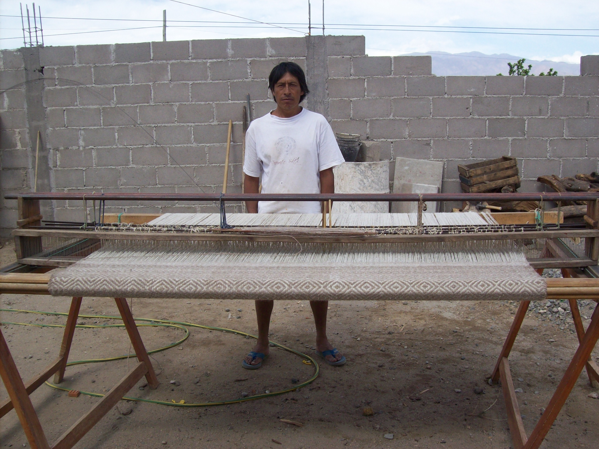

Taller y comunidad
Saberes que se comparten

Quiénes Somos
Sostenemos un espacio de producción, encuentro y cuidado mutuo donde la artesanía se vive como trabajo, cultura y comunidad.
“A todos los artesanos y a todos aquellos que sientan la necesidad de asumir el compromiso de crecimiento individual y colectivo, en defensa de los intereses comunes”
Acta constitutiva, 20 de febrero, 2010
Somos una asociación de artesanos que, desde Cafayate, construye día a día un espacio de trabajo, encuentro y creación colectiva. Nuestro recorrido, forjado con esfuerzo y cooperación, refleja una decisión compartida: frente a la incertidumbre y las transformaciones del mundo en general y el trabajo en particular, la salida es colectiva.
Entendemos la artesanía como algo más que un medio de sustento. Cada pieza es una expresión singular, un objeto que condensa la historia, el pensamiento y la sensibilidad de quien la crea. En ese proceso, el artesano deja de ser anónimo para convertirse en autor de un bien cultural que dialoga con su comunidad y con su tiempo.
Como asociación, nos proponemos ser una herramienta de desarrollo social. Abrimos nuestras puertas al aprendizaje, al intercambio de saberes y al acompañamiento de nuevas generaciones. Creemos en la transmisión de la experiencia como base para que otros continúen, transformen y enriquezcan este camino colectivo.
Los esperamos.
Con cariño: Asociación de Artesanos Independientes Cafayate Artesanal
Taller y comunidad
Trabajo colectivo
Construimos un espacio digno y compartido para el oficio artesanal.
Intercambio de saberes
La experiencia circula, se transmite y se enriquece en comunidad.
Nuevas generaciones
El proyecto se abre a quienes quieran continuar y hacer suyo este camino.
